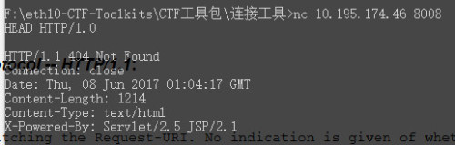

fvb /links

my desk setup
-----
desktop pc 'silent'
atlast! solutions
Ultimate Black Impactics Fanless Case Mini-ITX PC
Core i7 Skylake, 16GB DDR4 3GHz, ASUS Z170i, 500GB HDD 7200rpm
keyboards
planck-ez
corne
gergoplex
I use arch btw ;)
arch linux
bspwm
neovim
qutebrowser
st
vifm
zsh
some screenshots
-----
laptop 'red'
dell
Dell Vostro 1720 Red
Intel Celeron 900, 2GB DDR2 2.2GHz, Dell 0C160T, 250GB HDD 7200rpm
arch linux
bspwm
neovim
qutebrowser
st
vifm
-----
my favorite place irl
home sweet home
thanks to
pieter | sanipierre and mariëlle | studio bid
-----
1337x
9gag
arch linux
arch linux forums
atlast!
avaaz
bits of freedom
bspwm
debian
debian user forums
github
hashgraph
learn linux
lf
luke smith
mega
neovim
one thing well
prinsenstichting
python
qutebrowser
ranger
runnersworld
smulweb
st
stackoverflow
suckless
terminalforlife
the hackers news
tor
torrentfreak
tutorialspoint
vifm
vim
weechat
what's the harm?
wikileaks
zenburn
zsh
and now for something completely different
some fun
dilbert
john and john (by d!o)
xkcd
some other fun
pornhub
and last but not least some philosophical fun
max stirner - the ego and his own
the answer to the ultimate question of life, the universe, and everything
created with neovim
copyleft
fvb